Andeutung der Finger rechter und linker Hand.
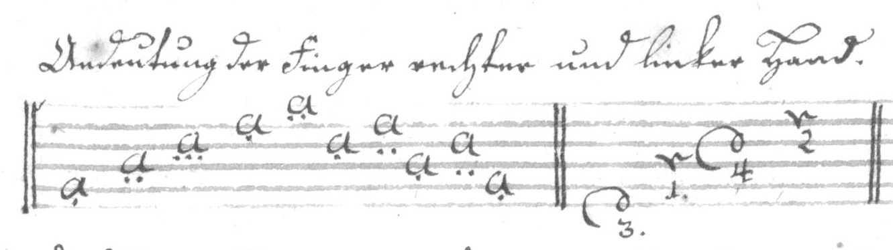
Zugleich geschlagen.
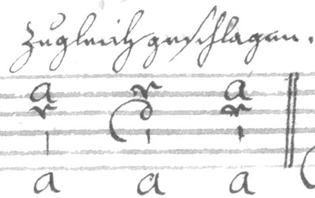
Gebrochen.
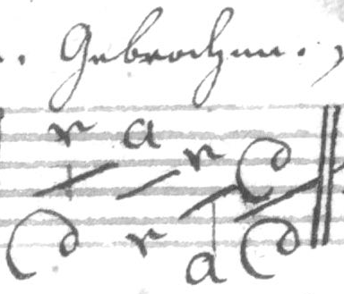
sincubirt.
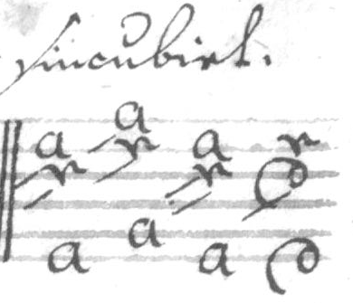
(line 2)
Der Daumen Schlag.
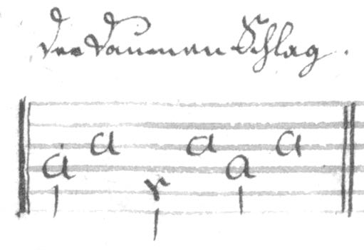
Gestossen.
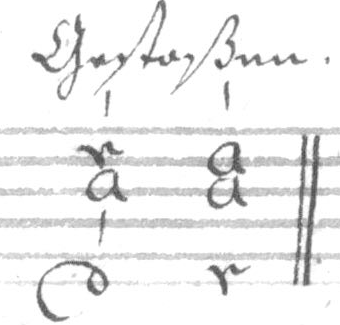
Ausgeschreine Abzug.
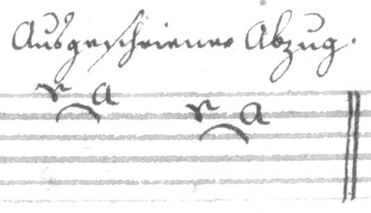
Derselbe nicht aus geschreiben.
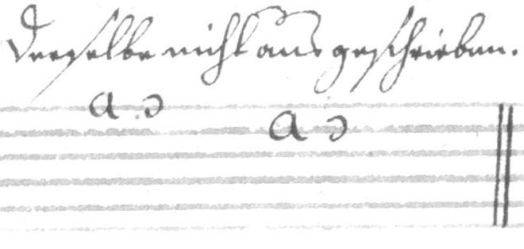
Doppelter Abzug
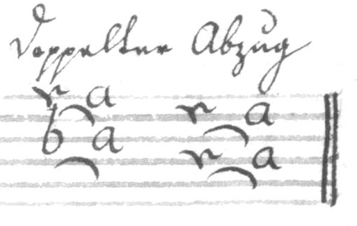
(line 3)
Dopp. Abzug unausgeschreiben.
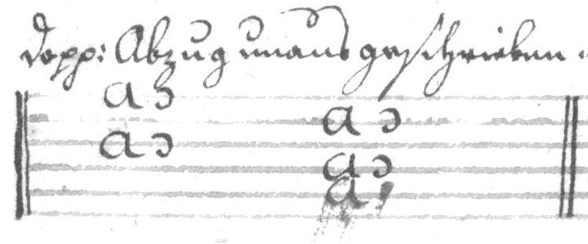
Einfall.
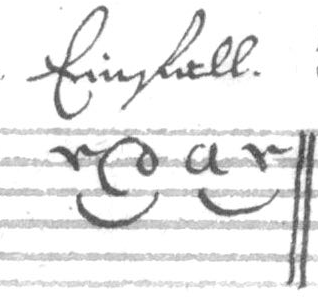
Selbige unausgeschreiben.
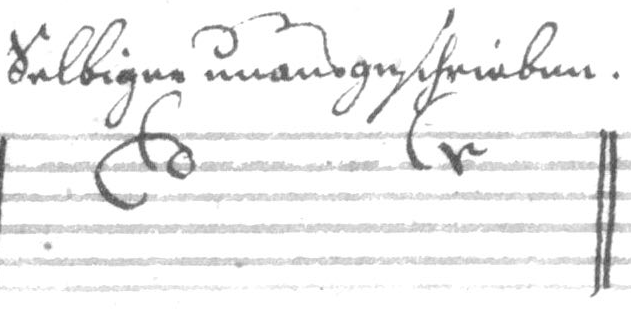
Doppelter Einfall.
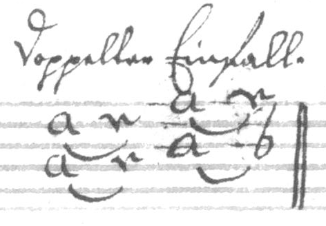
oder [i.e. an alternative notation]
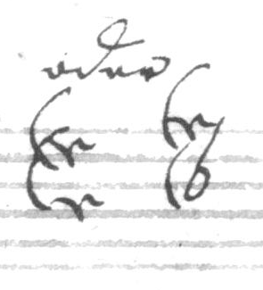
(line 4)
Beyderley Abzug.
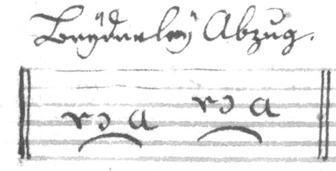
Einfall auf 3 Noten.
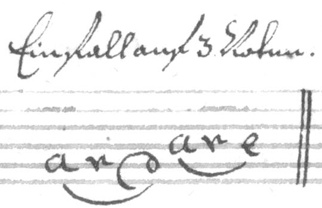
Dergleichen Abzug.
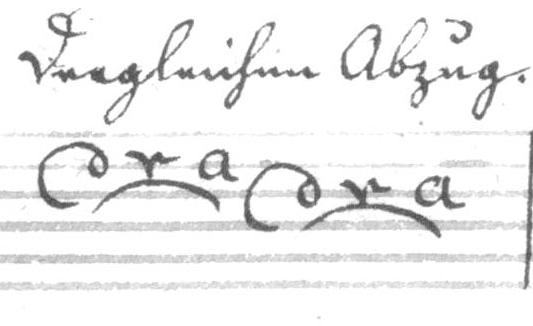
Bebung.
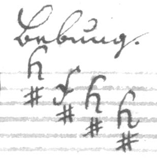
Mordant.
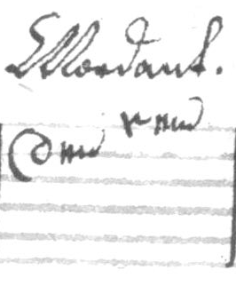
Semi-Mord:
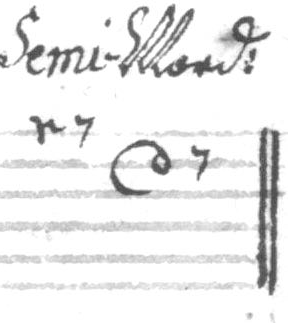
(line 5)
Scheifer.
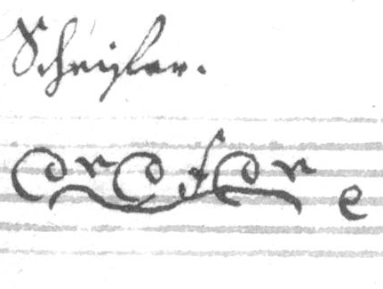
Triller.
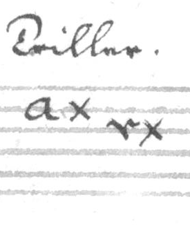
Semi-Trillo.
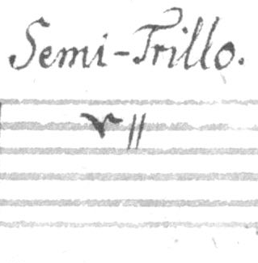
Doppelter Triller.
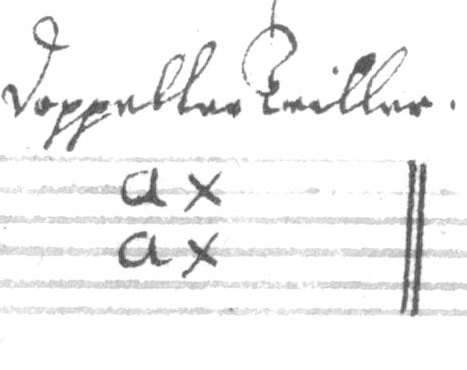
Fortgang des Trillers
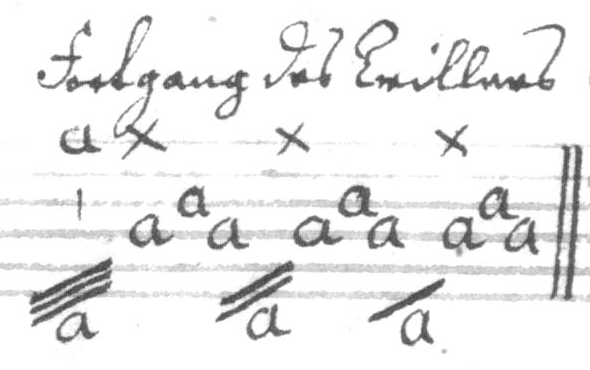
Uberlegung
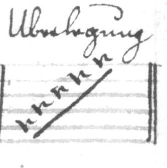
(line 6)
oder. [i.e. an alternative notation for Uberlegung] Bindung.
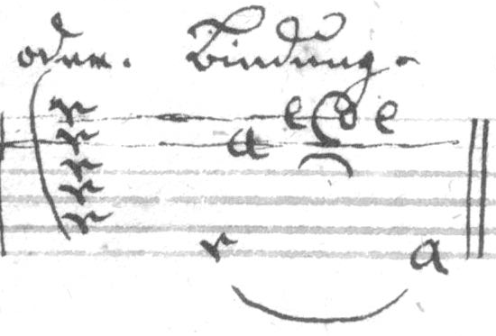
Gebrochener Baß
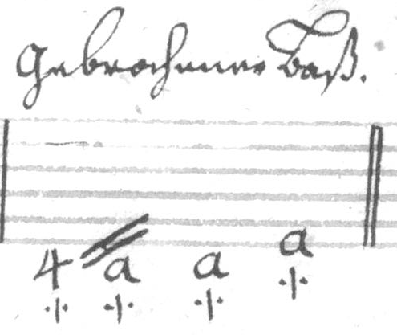
[?] Gestreichner Töne
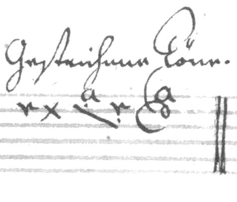
Geschliefener Töne.
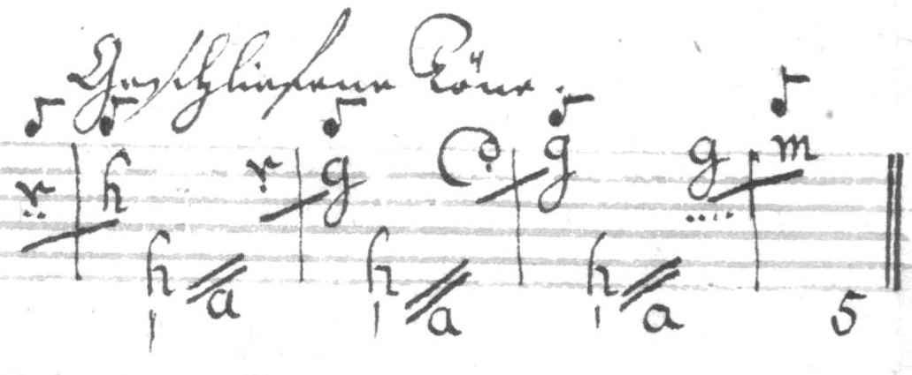